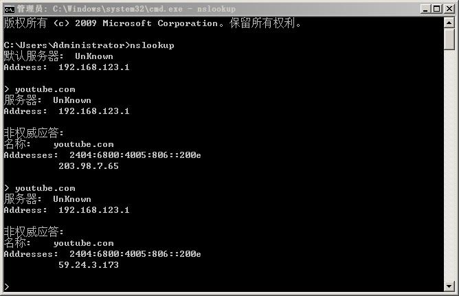
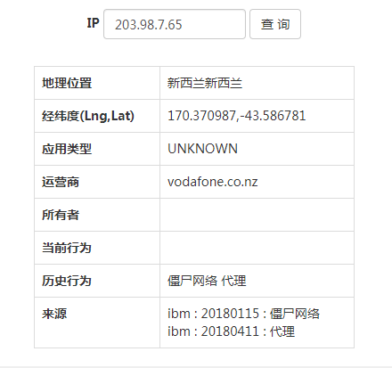
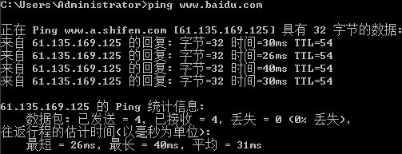
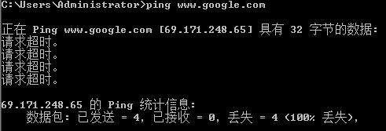
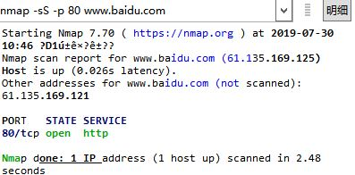
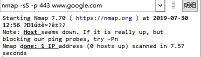

如何一步步检测你的服务器是否被墙（防火墙机制猜测）
Create At: 2019-07-30写在网络安全周：防火墙机制猜测
Sept.18.2019更新: 这段不讨论技术细节，只是说一些我的想法。
经验
每隔一段时间就会新出一种科学上网方式，例如刚开始的l2tp vpn，到ss，到后来的ssr，v2ray等等，没有一种方式是能够保证完全躲过检测的。只要你的网络传输是公网，就必然经过防火墙，那么就必然会被检测。
实践证明，在公网环境下的任何方法实际上都是会被探测到，近两年每次临近重大日期都会发生大规模ban ip的情况足够说明了防火墙已经有了足够的探测能力，只不过看防火墙想不想管罢了。无论是用的什么加密方式、端口号、ip段、是否ssh直连、是否架设了人畜无害的网站 都没有所谓。即便是使用了v2ray+使用cloudflare cdn套ws的方法。
这个就跟知乎上看到过的一篇文章道理是一样，假如我是gfw，我并不需要破解你的加密协议知道你传输了些什么内容，我只知道大陆有大量加密连接链接到境外某一ip或主机，而且流量较大，则我有理由猜测你是在做什么。
根据以往的经验，封锁的严重程度如下：
1. 单协议 + 单端口号 封锁：如使用了tcp 3000端口进行富强，那么只封tcp 3000。其他端口不受影响，其症状为tcp 3000无法通信，其他正常。实际上由于tcp通信的方式，tcp封禁的方式也很多样，这里就不细说了。
2. 单协议 封锁：tcp直接全部无法通信，此时icmp(ping)或者udp通信正常。
3. ip封锁：无法和该ip进行通信。
4. 域名污染：域名被污染，下面的种类很多，例如无法解析（返回投毒ip）。
防火墙为双向防火墙，因为通过traceroute可以观察到两种情况，一种是流量无法出境，一种是流量能够出境但是无法入境。
看法
还是那句话，其实只要你人在大陆，你无论做什么都是老大哥是一直都是知道的。有人认为暗网足够安全，但是实际上并不是，因为我亲眼见过。实际上如果你看过telegram的协议，tg实际上也并不安全。专线网络可能会不够那么安全，但是公网必定不安全。
零、正文
由于在你到你的服务器间有大家都懂的不稳定的因素存在，在爱国上网软件无法链接时需要判断是否是这个不稳定因素造成的。记录一下我平常的判断方法。
当然前提是服务器端和客户端已经配置正确。
一、排除DNS污染
之前遇到过的一个情况，线路是通的，但是就是访问不上，最后发现是本机使用的DNS被污染。
虽然现在有些爱国上网工具已经不再使用客户端DNS进行域名解析，但是某些特殊情况下利用客户端DNS解析的时候就需要排查这个问题。
在我目前遇到情况下看来，在此情况下使用nslookup每次都会返回不同的垃圾ip，并且不像正常情况下那样的返回看起来就不一样的ip。
如果你拿这个ip去查，就会发现就是个垃圾ip。
但是如果用无污染的dns查询则是返回的正常结果。例如我这里用的是中科大的dns。
大家也可以自行查一下这个ip。
由于dns查询的特性，境外的dns服务基本上都是属于不可用的状态。所以不要以为把dns改成8.8.8.8就万事大吉了。
二、Ping检测
这是比较原始，在一定情况下有效的方法。
前提是服务器的防火墙允许了icmp，也就是不禁ping。一般典型的服务器畅通的ping情况如下：
一般典型的服务器不畅通的ping情况如下：
如果可以确定之前服务器是可ping通的但是某天突然ping不通了，可以初步确定你的服务器ip被照顾了。
三、tcp连通性检测
目前可以观察到的现象是，会有tcp阻断的存在，也就是说icmp是通的，udp也是通的，只是tcp是阻断的。那在这种情况下ping通也不能代表什么了。
所以此时需要用到nmap这个工具。其实用tcping也是一样的，考虑到之后还需要做udp连通性检测，那就干脆nmap一步到位吧。
基本语法：
nmap -sS -p 80 www.google.com
-sS 使用tcp
-sU 使用udp
-p 80 指定端口畅通时结果如下：
否则就会如下，也就是检测不到服务器开机的：
当然也有可能检测到STATE是filtered或者closed，一般这两种状态是单协议阻断造成的，比如只阻断了tcp或者udp。这里找不到图就不放了。
建议在本地tcp检测是不通的之后，去一些境外的tcp检测网站试一下是不是通的，用来排除服务器本身的问题。
四、udp连通性检测
这种检测是针对使用的爱国工具用的是udp方式的，因为udp连通检测工具不像tcping那样好实现，所以还是用nmap来检测。